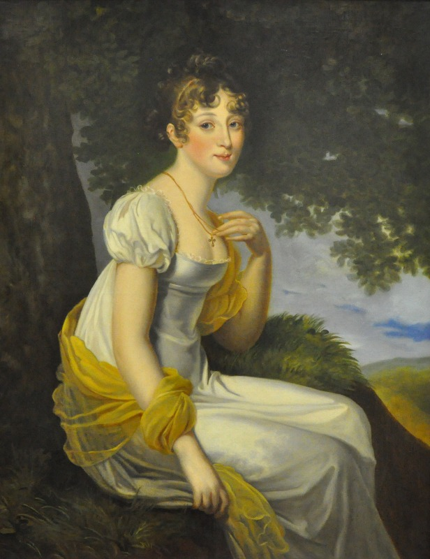
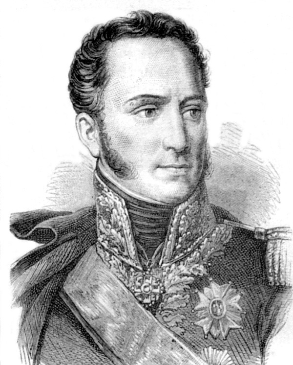
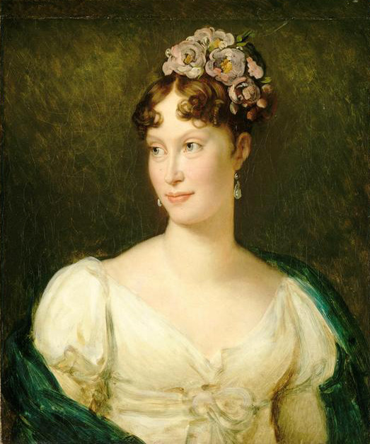
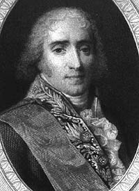
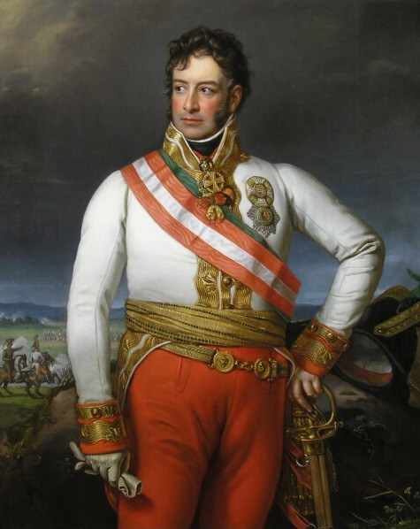
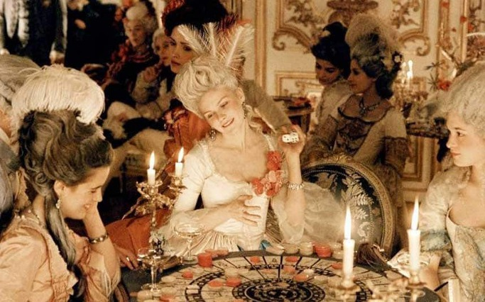

브랜드 가치와 실속 - 나폴레옹의 재혼
게시: 2017-12-17T20:55:52+09:00
성공한 남자가 이혼을 하는 이유는 조강지처와의 성격 차이나 식어버린 애정 문제가 아닙니다. 이유는 단 하나, 새 여자와 결혼을 하기 위해서입니다. 조세핀과의 이혼이 공식 발표되기 한 달 전, 러시아 주재 프랑스 대사인 콜랭쿠르는 본국으로부터 지시문을 받습니다. 나폴레옹과 로마노프 가문과의 혼인을 추진해보라는 것이었습니다. 대상은 짜르 알렉산드르의 둘째 여동생, 안나(Anna Pavlovna)였습니다. 안나는 당시 14세로서 사실 결혼하기는 너무 이른 나이이기는 했습니다. 하지만 생일이 1월이었으므로 불과 몇 달 뒤면 15세가 되었고, 15세면 당시로서는 혼인이 불가능한 나이도 아니었습니다. 나폴레옹은 자신과 무려 26세 차이가 나는 이 어린 소녀에게 혼인 의사를 밝힌 것이지요.

(안나 파블로브나입니다. 이 초상화는 1813년에 그려진 것으로, 이 그림 속의 나이는 18세입니다. 안나는 결국 오렌지공 빌헬름과 결혼하여 나폴레옹 몰락 이후 새로 태어난 네덜란드 왕국의 왕비가 됩니다.)
이건 굉장히 민감하고 까다로운 문제였습니다. 이미 지난 1808년 9월~10월의 에르푸르트(Erfurt) 회담에서, 나폴레옹은 짜르 알렉산드르 1세에게 넌지시 그의 첫번째 여동생 예카테리나(Ekaterina Pavlovna)와의 혼사에 대해 의향을 물은 바 있었습니다. 언니 예카테리나(Ekaterina Pavlovna)는 알렉산드르가 가장 좋아하는 여동생으로서, 눈에 넣어도 아프지 않을 정도로 아끼는 동생이자 로마노프 왕가의 꽃이라고 할 수 있는 처녀였습니다. 이 황녀와의 혼인에 대한 알렉산드르의 대한 답변은 회담 직후에 행동으로 나왔습니다. 알렉산드르는 '다소 점잖지 못할 정도로 서둘러' 이 여동생을 사촌 관계인 올덴부르크 공작 게오르그(Duke George of Oldenburg)에게 시집보냈던 것입니다.
그런데 다시 한번 혼사를 논의한다 ? 이건 대단한 모험이었습니다. 만약 러시아가 다시 한번 거절한다면 그건 가뜩이나 위태롭게 유지되던 프랑스-러시아의 동맹에 결정타를 먹이는 외교 참사가 될 수 있었습니다. 물론 성공하기만 한다면 틸지트(Tilsit) 조약으로 맺어진 두 황제의 결속을 혈연 관계로까지 굳게 만드는 쾌거가 될 수 있었습니다. 콜랭쿠르는 매우 유능한 외교관이었습니다. 그는 나폴레옹의 의사를 넌지시 러시아 궁정에 흘렸고, 그 반응을 떠보았습니다.

(아르망 콜랭쿠르입니다. 그는 콜랭쿠르 후작 가문 태생으로서 진짜 귀족이었고, 때문에 혁명군에서 복무했는데도 반혁명파로 의심받아 대혁명 때 억울하게 투옥되기도 했습니다. 그는 러시아어를 비롯한 여러 외국어에 능통한 매우 유능하고 성실한 군인이자 외교관이었습니다. 그는 나폴레옹에게 끝까지 충성했지만 그냥 맹목적인 충성만 바치는 것은 아니라서 러시아 침공에는 끝까지 반대했습니다. 그는 알렉산드르로부터도 높이 평가를 받았고, 워털루 전투 이후 체포 및 숙청 대상에 오르기도 했으나, 알렉산드르의 요청으로 그 살생부에서 이름이 지워졌습니다.)
나폴레옹이 이렇게까지 로마노프 황가와의 혼인을 원했던 이유는 매우 단순했습니다. 프랑스를 제외하고는 러시아가 당대 유럽 최강국이었기 때문이었습니다. 틸지트 회담에서도 드러났지만, 나폴레옹의 빅 픽처는 유럽 대륙의 질서를 프랑스와 러시아가 양분하여 지배하는 것이었습니다. 이왕 새장가를 간다면, 유럽 최강의 가문을 자기 아들의 외가집으로 만드는 것이 좋았습니다.
이러한 제안을 접한 알렉산드르도 난처한 처지였습니다. 그에게도 나폴레옹과의 연합은 무척 중요한 것이었습니다. 누가 당대 제1의 권력자이자 영웅인 나폴레옹과 척을 지고 싶겠습니까 ? 더구나 알렉산드르가 러시아의 숙원인 남방으로의 확장, 오스만 투르크를 공격하여 발칸 반도로 세를 넓히기 위해서는 프랑스의 협조가 절실했습니다. 하지만 틸지트에서 나폴레옹이 약속한 달콤한 열매는 핀란드 외에는 아무 것도 이루어진 것이 없었습니다. 젊고 멍청한 짜르가 노련한 나폴레옹에게 휘둘려 이익은 보지 못하고 착취만 당한다는 비웃음을 사는 것은 알렉산드르의 자존심에 상처를 주는 일이었습니다. 게다가 러시아 귀족들과 국민들은 대부분 나폴레옹에 대한 반감이 컸습니다. 원래 러시아 민중은 독일이건 프랑스건 외국인이라면 다 싫어했으므로 그런 성향이 이해가 가는 일이었습니다만, 귀족들은 왜 나폴레옹을 싫어했을까요 ? 대부분의 러시아 귀족들은 프랑스어를 유창하게 말하는 것을 당연하게 생각할 정도로 프랑스 문화를 동경했는데 말입니다. 그 이유도 단순했습니다. 돈이었지요. 러시아 토지 귀족들의 돈 줄은 자신의 농노들이 생산한 잉여 농산물을 영국으로 수출하는 것이었는데, 나폴레옹의 대륙 봉쇄령으로 인해 영국과의 교역이 끊기면서 입는 금전적 피해가 컸습니다.
아무리 러시아 짜르가 나폴레옹과는 달리 국민들의 지지 여부와는 무관한 전제 군주정이라고 해도, 온 나라가 싫어하는 나폴레옹과 사돈관계가 되는 것에는 압박을 느낄 수 밖에 없었습니다. 결정적으로, 알렉산드르와 안나의 어머니인 황태후가 이 결혼에 부정적이었습니다. 아직 15세도 채 되지 않은 어린 딸을 머나먼 타국에 보낼 수 없다는 것이었지요. 더군다나 신랑이 40대 코르시카 촌놈이라니 ! 알렉산드르는 어머니의 반대를 핑계삼아 뚜렷한 입장 표명을 차일피일 미루었습니다.
이렇게 나폴레옹과 알렉산드르 사이에 밀당이 벌어지는 사이 난리가 난 곳이 있었습니다. 바로 쇤브룬 궁전이었습니다. 오스트리아 궁정도 바보는 아니었으므로, 나폴레옹과 알렉산드르 간의 혼사가 무엇을 의미하는지 잘 알고 있었습니다. 보나파르트 가문과 로마노프 가문이 양분하는 유럽에서 합스부르크 가문이 설 자리는 없었습니다. 이 결혼이 그대로 성사된다면 합스부르크 가문은 이미 찌그러질대로 찌그러진 프로이센의 호헨촐레른 가문처럼 될 것이 뻔했습니다. 합스부르크 측도 기민하게 움직였습니다. 그렇다고 대놓고 로마노프 대신 자신들과 혼인을 해달라고 이야기할 수도 없었습니다. 그러다가 거절당하면 정말 그 망신은 수습이 안 될 지경일테니까요.
움직인 것은 노련한 메테르니히(Metternich)였습니다. 그는 프랑스 측과 선이 닿는 사람과의 모호한 대화를 통해 프란츠 황제의 딸 마리아 루이자(Maria Louisa, 프랑스식으로는 Marie Louise)와 나폴레옹의 결혼 가능성을 넌지시 프랑스 측에 전달했습니다. 오스트리아의 전략은 브랜드 가치였습니다. 러시아 로마노프 왕조보다는, 대대로 유럽 중앙 무대에서 명예와 권위를 쌓아온 합스부르크 왕조가 나폴레옹과 그 아들의 미래에 훨씬 더 도움이 된다는 호소였지요. 이건 어느 정도 말이 되는 이야기였습니다. 까놓고 보면 러시아는 까마득히 먼 동방의 나라였고, 단지 머릿수가 많아 군대 머리 수가 많을 뿐 유럽의 후진국에 불과했습니다. 로마노프라는 이름은 유럽 귀족 세계에서 존경과 경외보다는 두려움과 경멸을 자아내는 편이었습니다.

(나폴레옹의 황후 마리 루이즈입니다. 나폴레옹의 궁정 화가 제라르의 그림입니다. 그녀는 프랑스인들로부터 오만하다는 평가를 받기도 했는데, 실제로는 그냥 내성적이고 수줍은 성격 때문에 말수가 적었을 뿐, 매우 상냥하고 순종적인 사람이었습니다.)
게다가 유사시 나폴레옹에게 실질적 군사적 도움을 줄 친구로서 러시아와 오스트리아 중 택일하라면 그것 또한 쉬운 결정은 아니었습니다. 비록 머릿수는 러시아보다 오스트리아가 더 적었으나 그 질적 문제에 있어서는 오스트리아군이 결코 프랑스군보다 크게 떨어지지 않는다는 것은 이번 전쟁을 통해 나폴레옹이 직접 경험한 바 있었지요. 무엇보다, 러시아는 이역만리 저 동방 진흙밭 너머에 있는 나라였습니다. 당장 영국 또는 프로이센과 전쟁이 벌어지거나 이탈리아에서 반란이 일어날 때 먼 곳의 러시아군 10만보다는 가까운 오스트리아군 5만이 더 큰 도움이 될 수 있었습니다.
결정적으로, 알렉산드르의 지연되는 반응을 나폴레옹은 사실상의 거절이라고 해석했습니다. 이미 간접적으로 예카테리나에 대한 청혼을 거절당한 입장에서, 그 동생 안나까지 거절당한다는 것은 나폴레옹처럼 자의식 강한 사람에게는 받아들일 수 없는 일이었습니다. 나폴레옹은 여전히 러시아와의 혼인 동맹이 자신의 이익에 가장 부합된다고 판단했으나, 그건 어디까지나 혼인이 가능할 때의 이야기였습니다.
그는 측근들을 소집하여 러시아냐 오스트리아냐를 결정하도록 했습니다. 나폴레옹의 심복이라고 할 수 있는 뮈라와 푸셰, 캉바세레스는 러시아와의 혼인에 표를 던졌으나 마레(Hugues-Bernard Maret, duc de Bassano)가 주도하고 탈레랑도 가세한 다수파는 오스트리아를 택했습니다. 결국 나폴레옹으로서도 태도가 모호했던 러시아보다는 상당히 적극적이었던 오스트리아를 택하는 것이 어쩔 수 없는 선택이라고 결론짓게 되었습니다. 결국 다음해인 1810년 1월, 나폴레옹은 마리 루이즈와의 결혼을 결심합니다.

(바사노 백작 마레입니다. 그는 전문 법률가였으나 혁명 와중에 외무부에서 일하면서 나폴레옹의 신임을 얻게 됩니다. 무척 뛰어난 관료였던 그는 나폴레옹의 재혼 1년 후인 1811년 샹파니의 뒤를 이어 프랑스의 외무부 장관이 됩니다.)
원래 결혼이란 사랑하는 남녀가 하는 것입니다. 그러나 따지고 보면 그건 지극히 현대적인 개념이고, 당시로서는 결혼하는 당사자들, 특히 여성의 의사는 전혀 중요하지 않았습니다. 나폴레옹 본인조차 측근들에게 '나는 (아들을 낳아줄) 자궁과 결혼한다'라고 말할 정도로 새 아내가 될 마리 루이즈 본인에 대해서는 큰 관심이 없었습니다. 정작 마리 루이즈가 자신과 나폴레옹의 결혼이 결정되었다는 것을 안 것은 이미 파리 주재 오스트리아 대사인 슈바르첸베르크(Karl Philipp, Fürst zu Schwarzenberg) 대공이 1810년 2월 7일, 결혼 계약서에 서명한 뒤의 일이었습니다.

(메테르니히의 뒤를 이어 파리 주재 오스트리아 대사가 된 슈바르첸베르크 대공입니다. 그는 울름 포위전에서 페르디난트 대공을 따라 탈출한 기병대의 일원이었고, 러시아 대사로 활약하기도 했습니다. 바그람 전투에도 참전했던 그는 나중에 연합군의 고참 지휘관으로서 1813년 드레스덴 전투에 참전하여 다시 나폴레옹의 손에 참패를 겪기도 합니다.)
마리 루이즈에게 이건 정말 청천벽력과 같은 일이었습니다. 그녀는 결혼을 통해 팽창하는 가문의 공주답게 다른 왕가의 왕비가 되기 위한 교육을 받고 자라난 전형적인 합스부르크의 딸이었습니다. 그런 그녀는 당연히 프랑스 대혁명과 나폴레옹을 철저히 증오하도록 키워졌습니다. 뭐 딱히 증오를 가르칠 필요도 없었습니다. 나폴레옹의 침공 때문에 두번이나 피난을 떠나며 공주에게 어울리지 않는 생고생을 해야 했던 마리는 이미 나폴레옹을 무슨 괴물이나 도깨비처럼 생각하고 있었습니다. 그런데 자신이 바로 그 나폴레옹과 결혼을 해야 한다니 ! 당시 그녀는 불과 18살에 불과했습니다. 물론 당시로서는 결혼 적령기의 나이이긴 했습니다만, 20대 꽃미남은 커녕 이제 40대에 접어든 통통한 중년 아저씨와의 결혼은 가혹한 일이었습니다. 하지만 그녀는 정말 합스부르크의 공주다운 소녀였습니다. 그녀는 어린 나이에도 영어와 불어, 이탈리아어와 스페인어에 라틴어까지 할 줄 알았는데, 가문의 필요상 어느 나라로 시집을 가든 준비된 왕비 역할을 해낼 수 있도록 하기 위함이었습니다. 그런 합스부르크의 공주는 상대가 누구이든 가문의 이익을 위해서는 기꺼이 그 아내가 되어야 했습니다. 이제 오스트리아의 외무부 장관이 된 메테르니히가 그녀에게 나폴레옹과의 결혼을 통보하면서 그 결혼에 동의해달라고 부탁하자, 그녀는 이렇게 답을 했다고 합니다.
"저는 제 의무가 제게 시키는 것만 바란답니다."
마리 루이즈의 말 그대로였습니다. 18세 젊은 처녀가 무엇을 바라고 어떻게 느끼느냐는 전혀 중요하지 않았습니다. 그러나 관련국들이 어떻게 받아들였는가는 중요했지요. 빈 시민들은 이를 경사로 받아들였습니다. 빈을 점령했던 프랑스군은 규율있게 행동했고 또 빈 시민들도 무력으로 저항하지 않았으므로 사실 양국 대중들은 서로를 미워할 이유가 별로 없었습니다. 오스트리아 국민들은 이번 결혼으로 최소한 프랑스와 더 전쟁을 벌일 일은 없게 되었다며 크게 기뻐했습니다. 무엇보다, 유럽 제일의 권력자가 자기 나라의 사위가 된 것처럼 든든한 일이 어디 있겠습니까 ?
생페체르부르크에서는 감정이 엇갈렸습니다. 귀족들과 국민들은 차라리 다행이라는 입장이었습니다. 나폴레옹이라는 이름은 대륙봉쇄령과 동일시 되었는데, 최소한 그 지긋지긋한 인간과 인척 관계까지는 맺지 않는 편이 더 낫다는 것이었지요. 하지만 짜르 알렉산드르는 격분했습니다. 온통 반프랑스 분위기인 나라에서 자기 하나만 나폴레옹을 믿고 친프랑스 정책을 폈는데, 답변이 늦는다는 이유로 대뜸 합스부르크 가문과 혼인을 해버리다니 자신의 체면이 바닥에 떨어졌다는 것이었습니다. 프랑스 대사인 콜랭쿠르는 알렉산드르의 기분을 달래주느라 한창 애를 썼습니다만, 이 결혼이 틸지트 조약에서 그려진 나폴레옹의 빅 픽처에 큰 균열을 만든 것은 어쩔 수 없는 사실이었습니다.
나폴레옹 본인은 이 결혼에 대해 꽤 흡족해 했습니다. 그는 처음에는 마리 루이즈가 곰보이든 뚱보이든 전혀 개의치 않았으나, 순종적이고 품위있는데다, 결정적으로 어리고 브랜드 가치가 좋은 이 합스부르크 공주를 애지중지하게 되었습니다. 심지어 조세핀보다 더 사랑한다고 말하게 될 정도였지요. 게다가 아스페른-에슬링에서 전사한 절친 란의 1주년 추모식 행사에 '오스트리아 출신 황후를 배려하기 위해서' 불참하기도 했습니다. 다만 나중에는 너무 순종적고 내성적이라 조세핀의 정열과 활달함이 아쉽다는 소리도 함께 하여 마리 루이즈의 격분을 사기도 했습니다.
중요한 것은 프랑스 국민들의 감정이었는데, 오스트리아 공주님이 자신들의 황후 마마가 된 것에 대해 프랑스 대중의 감정은 그다지 좋은 편은 아니었습니다. 마리 앙뚜아네트로 대표되는 앙시앵 레짐을 떠올리게 했기 때문입니다. 실제로도 나폴레옹은 앙뚜아네트가 거쳤던 결혼 의식을 그대로 벤치마크했습니다. 그는 앙뚜아네트가 프랑스에 시집올 때의 코스 그대로 마리 루이즈의 여행길을 짜도록 했고, 신부를 국경선에서 오스트리아 측으로부터 인수받을 때도 앙뚜아네트가 그렇게 했던 것처럼 고국의 모든 것을 두고 오도록 현장에 가설한 천막에서 속옷까지 다 프랑스제로 갈아입고 오도록 했습니다. 이런 의전은 자신의 황권에 권위를 더하기 위해 다분히 의도적으로 되살린 것이었습니다만, 국민들은 나폴레옹의 통치가 부르봉 왕조의 전제정으로 퇴화하는 것 아닌가 의심스러운 눈초리로 바라보았습니다.

(커스틴 던스트가 주연한 2006년도 영화 '마리 앙뚜아네트' 입니다. 최근에 케이블 TV에서 해주는 것을 잠깐 봤는데, 오스트리아에서 프랑스로 넘어갈 때 애완견을 포함한 오스트리아의 모든 것을 다 두고 가야 한다면서 프랑스 측에서 나온 귀부인이 앙뚜아네트를 벌거벗기는 장면이 나오더군요. 실제로도 그랬답니다. 영화는 재미없어서 도중에 채널 돌렸습니다.)
어쨌거나 합스부르크라는 브랜드 가치는 그 효과를 발휘했습니다. 파리는 결혼 축하 행사와 축포로 떠들썩했고, 일단 분위기는 좋았습니다. 나폴레옹을 가장 흡족하게 했던 것은 오스트리아 대사 슈바르첸베르크 대공의 건배사였습니다. 그는 잔을 들고 우렁찬 목소리로 "로마 왕(Roi de Rome)을 위해"라고 외친 것입니다. 로마 왕이라는 것은 과거 신성로마제국의 황태자에게 의례적으로 주어지는 칭호였습니다. 영국에서 왕세자를 웨일즈 왕자(Prince of Wales)로 부르거나 조선 왕조에서 세자를 동궁(東宮)으로 부르는 것과 비슷한 것이었지요. 오스트리아 대사는 아직 태어나지 않은 나폴레옹 2세에게 그 칭호를 바침으로써 나폴레옹이 그토록 원하던 것, 즉 대포와 총검이 아닌 전통과 권위에 의한 통치권을 가지게 되었다고 여기게 해준 것입니다.
물론 그 모든 것은 허황된 꿈에 불과했습니다. 나폴레옹 제국은 이미 몰락을 향해 치닫고 있었습니다.
Source : The Life of Napoleon Bonaparte by William Milligan Sloane
https://en.wikipedia.org/wiki/Marie_Louise,_Duchess_of_Parma
https://en.wikipedia.org/wiki/Armand-Augustin-Louis_de_Caulaincourt
https://en.wikipedia.org/wiki/Anna_Pavlovna_of_Russia